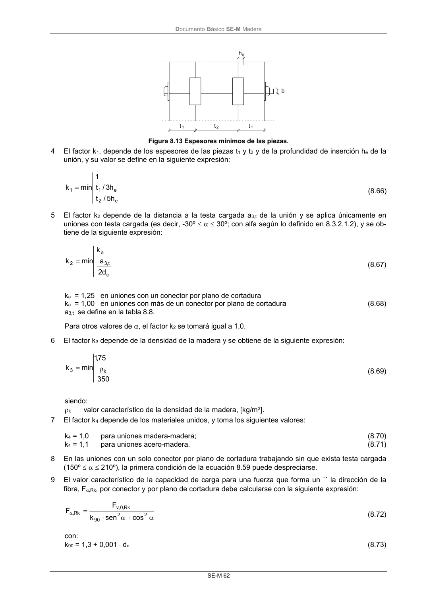

DB-SE-M · Página 68 · versión 2019-12-20
SHA256: 26b5819839ebfda78b0b119c5e76a0a37773b0d763c05688541870075df93718 · página física 68 de 132 · métodos de encabezado
solo si están cotejados.
Formatos: Markdown · JSON de bloques · PDF p. 68 · imagen PNG
Documento Básico SE-M Madera SE-M 62 Figura 8.13 Espesores mínimos de las piezas. 4 El factor k1, depende de los espesores de las piezas t1 y t2 y de la profundidad de inserción he de la unión, y su valor se define en la siguiente expresión: e 2 e 1 1 h 5 / t h 3 / t 1 min k (8.66) 5 El factor k2 depende de la distancia a la testa cargada a3,t de la unión y se aplica únicamente en uniones con testa cargada (es decir, -30º 30º; con alfa según lo definido en 8.3.2.1.2), y se ob- tiene de la siguiente expresión: c t, 3 a 2 d 2 a k min k (8.67) ka = 1,25 en uniones con un conector por plano de cortadura ka = 1,00 en uniones con más de un conector por plano de cortadura (8.68) a3,t se define en la tabla 8.8. Para otros valores de , el factor k2 se tomará igual a 1,0. 6 El factor k3 depende de la densidad de la madera y se obtiene de la siguiente expresión: 350 75 ,1 min k k 3 (8.69) siendo: k valor característico de la densidad de la madera, [kg/m3]. 7 El factor k4 depende de los materiales unidos, y toma los siguientes valores: k4 = 1,0 para uniones madera-madera; (8.70) k4 = 1,1 para uniones acero-madera. (8.71) 8 En las uniones con un solo conector por plano de cortadura trabajando sin que exista testa cargada (150º 210º), la primera condición de la ecuación 8.59 puede despreciarse. 9 El valor característico de la capacidad de carga para una fuerza que forma un `` la dirección de la fibra, F,Rk, por conector y por plano de cortadura debe calcularse con la siguiente expresión: 2 2 90 Rk , 0 ,v Rk , cos sen k F F (8.72) con: k90 = 1,3 + 0,001 dc (8.73)
